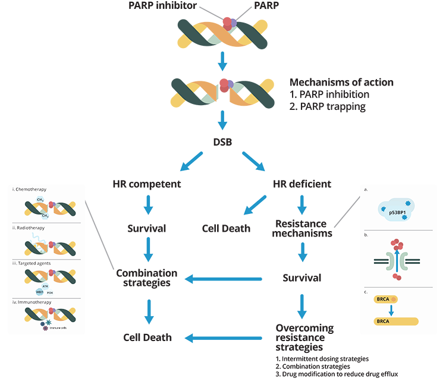
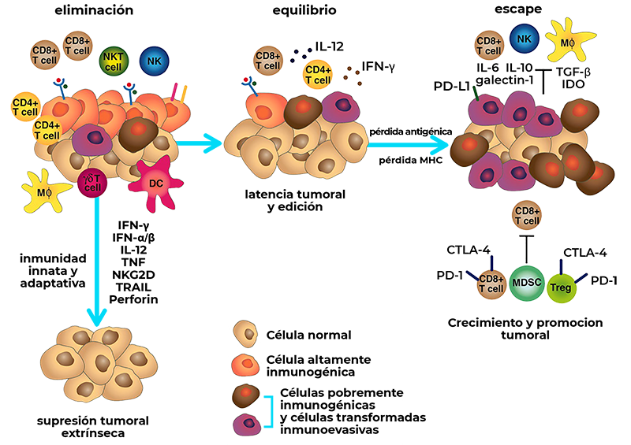
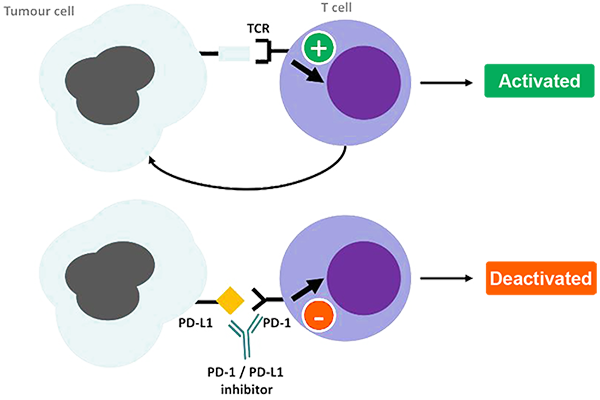

MÓDULO 3 : ENFERMEDAD DISEMINADA Y RECAÍDA LOCORREGIONAL
3.3 Tratamiento sistémico anti-tumoral.
Estrategias de tratamiento de la enfermedad TN
Objetivos
El cáncer de mama triple negativo avanzado es un verdadero reto en la práctica clínica habitual, para el que todavía no disponemos de fármacos que hayan impactado de forma notable en su pronóstico, a diferencia del resto de cánceres de mama.

Conocer las opciones de tratamiento quimioterápico del CMTN avanzado.
Conocer las nuevas opciones terapéuticas en CMTN avanzado asociado con mutación en BRCA1/2 en línea germinal.

Conocer el potencial impacto futuro de la inmunoterapia.
Conocer las vías de investigación actuales, que puedan ofrecer nuevas alternativas en el futuro.
Recalcar la importancia de la participación en ensayos clínicos de estas pacientes con tumores de tan mal pronóstico.
Introducción
El cáncer de mama triple negativo (CMTN) representa alrededor del 15% de los CM. Se define por la ausencia de expresión de receptor de estrógeno, receptor de progesterona (RE y RP < 1%) y ausencia de sobreexpresión del HER2.
El CMTN se asocia con un peor pronóstico que los otros subtipos de cáncer de mama, con más recaídas en la enfermedad localizada, y una peor supervivencia en la enfermedad metastásica, que se sitúa en torno a los 12-18 meses frente a 56-60 meses que se reportan en el momento actual para los tumores HER2+ o luminales.
La mayoría de CMTN avanzados son recaídas de tumores inicialmente localizados o localmente avanzados, y sólo alrededor del 5% son metastásicos de novo. Las recaídas son más precoces que en el resto de CM y son con más tendencia viscerales, con una mayor incidencia de afectación pulmonar (hasta en el 40% vs 20%) y cerebral (hasta el 30% vs 10%), y menor afectación ósea que en el resto de CM. En comparación con los tumores luminales, el CMTN presenta un patrón de recurrencia precoz. La mayoría se concentran en los 3 primeros años tras el diagnóstico inicial, y las muertes en los primeros 5 años. Una vez que se sobrepasan los 5 años desde el diagnóstico, el pronóstico se equipara con los tumores no TN.
Patrón de recaídas a distancia del CMTN. Foulkes, NEJM 2010
El CMTN se asocia con un mayor riesgo de recaída, mayor incidencia de metástasis viscerales, y con un riesgo de recaída precoz, concentrado fundamentalmente en los primeros 5 años tras el diagnóstico.
Entre aquellas pacientes inicialmente diagnosticadas de CM localizado, la respuesta a la quimioterapia neoadyuvante, medida según la enfermedad residual, tiene un gran valor pronóstico, siendo la supervivencia libre de recidiva a 10 años del 86% y 81% para las pacientes que alcanzaron la respuesta patológica completa o enfermedad residual mínima (residual cancer burden-RCB-I), frente al 55% y 23% para las pacientes con enfermedad residual moderada o extensa (RCB-II y RCB-III) respectivamente.
Asesoramiento inicial
Ante una recaída sistémica de un CMTN, debe llevarse a cabo una correcta anamnesis, exploración física, y es necesaria una prueba de imagen toracoabdominal y ósea. Si fuera accesible, se recomienda la realización de biopsia para confirmación histológica de la enfermedad metastásica y de su perfil IHQ. Aunque el CMTN tiene una mayor incidencia de metástasis cerebrales, no está indicado la realización rutinaria de cribado de metástasis en sistema nervioso central (SNC) en pacientes asintomáticas. A lo largo de la evolución, > 40% de las pacientes con CMTN metastásico desarrollarán afectación del SNC.
No está indicado el cribado de metástasis en SNC en pacientes asintomáticas.
Generalidades del tratamiento
La quimioterapia representa todavía la base del tratamiento del CMTN no seleccionado, aunque se están produciendo avances en terapias dirigidas para algunos subtipos de CMTN.
En general en el CM avanzado, se plantean los tratamientos de forma indefinida, hasta progresión o toxicidad inaceptable. Por tanto, a la hora de elegir el esquema terapéutico, debe considerarse tanto la eficacia como la tolerabilidad, y en general se prefiere el uso de monoterapias frente a combinaciones de poli-quimioterapias. Sin embargo, en el CMTN en concreto, dado que se trata de un tumor agresivo y rápidamente progresivo, con afectación visceral frecuente, riesgo de deterioro clínico rápido, y duraciones de tratamiento cortas, las guías sugieren que en este caso podría ser preferible el uso de combinaciones de QT más que las monoterapias.
No hay un estándar para la primera línea de tratamiento, y es necesario tener varios factores en cuenta a la hora de definir la estrategia inicial ante un CMTN avanzado, como son los tratamientos adyuvantes recibidos previamente y su toxicidad, el tiempo transcurrido desde entonces, carga tumoral y necesidad de respuesta rápida y/o necesidad de alivio sintomático. En general las respuestas a la QT son de corta duración.
Aunque en el caso del CMTN avanzado no existe un algoritmo terapéutico uniforme, y debe individualizarse cada caso, existen una serie de consideraciones que pueden ayudar en la elección del tratamiento (guías ESMO 2018) :
En caso de adyuvancia basada en antraciclinas, la 1ª línea estándar sería un taxano.
En pacientes tratados en la enfermedad localizada con antraciclinas y taxanos, sin necesidad de poliQT (no enfermedad rápidamente progresiva, sintomática, necesidad de respuesta rápida), puede considerarse el uso de monoterapias con capecitabina o vinorelbina.
Si se han usado taxanos en la enfermedad localizada, pero el intervalo libre de enfermedad (ILE) es > 1 año, pueden considerarse como tratamiento de 1ª línea. Las antraciclinas, si se han usado en enfermedad localizada, pueden reutilizarse en enfermedad avanzada siempre que no se haya alcanzado la dosis tope e ILE > 1 año.
Es importante recalcar que la mayoría de los estudios con QT convencionales se llevaron a cabo en cáncer de mama avanzado, sin especificar el subtipo, y, por tanto, no disponemos de tantos datos de eficacia en CMTN específicamente.
Al contrario que en la enfermedad localizada, en la que existe un número planificado de ciclos de tratamiento, en la enfermedad metastásica el tratamiento es con frecuencia indefinido, hasta la progresión o toxicidad inaceptable. Se objetivó que el mantenimiento con QT obtenía mejores datos en supervivencia libre de progresión (SLP) y supervivencia global (SG) que el tratamiento intermitente.
Dado que los resultados con las QT convencionales son pobres, y el pronóstico es malo a corto plazo, se recomienda valorar siempre que sea posible la inclusión de pacientes en ensayo clínico, de cara a ofrecerles nuevas alternativas terapéuticas.
No existe un tratamiento estándar para el CMTN avanzado. Puede considerarse el uso de combinaciones de QT sobre monoterapias por ser una enfermedad agresiva. Al elegir el tratamiento de 1ª línea del CMTN avanzado, debe considerarse los tratamientos recibidos previamente en la enfermedad localizada, ILE y perfil de toxicidad.
Líneas sucesivas
Al igual que en el caso de la primera línea de tratamiento, no existe un tratamiento estándar tras la progresión. A la hora de elegir el tratamiento en líneas sucesivas, hay que tener en cuenta terapias previas, comportamiento de la enfermedad o perfil de toxicidad.
En el caso de enfermedad sin mucha carga de enfermedad, y enfermedad no rápidamente progresiva, puede plantearse la monoterapia con capecitabina o vinorelbina.
Esquemas terapéuticos 1ª línea monoterapia
Taxanos
Los taxanos son agentes antimicrotúbulo que bloquean la formación del uso mitótico. Son de los fármacos más usados en CMTN, tanto en el escenario adyuvante como metastásico, siendo con frecuencia el tratamiento de primera línea. Existen 3 fármacos principales, docetaxel, paclitaxel y nab-paclitaxel, cada uno de ellos con sus particularidades y toxicidades específicas. Docetaxel se asocia con mayor riesgo de mielosupresión (neutropenia), toxicidad gastrointestinal (mucositis, náuseas, vómitos y diarrea) y retención de líquidos. Paclitaxel, por su parte, provoca más neuropatía y mialgias que docetaxel. Paclitaxel tiene una eliminación fundamentalmente renal, por lo que puede ser administrado en pacientes con afectación o daño hepático. A nivel de eficacia, aunque disponemos de datos de un estudio realizado en CM avanzado no seleccionado, docetaxel demostró un beneficio en SLP y SG comparado con paclitaxel, a expensas sin embargo de una mayor toxicidad. Nab-paclitaxel tiene un perfil de efectos secundarios más parecido al de paclitaxel. Los taxanos pueden administrarse en pauta trisemanal, o en pauta semanal 3 semanas sí/1 no.
En cuanto a su eficacia en 1ª línea de tratamiento, disponemos de multitud de estudios realizados en CM avanzado HER2-negativo.
En el ensayo AVADO, en el que se incluyeron alrededor de un 22% de pacientes con CMTN, se evaluó la incorporación de bevacizumab a docetaxel en 1ª línea de tratamiento. La SLP en la muestra global fue de 8,2 meses para docetaxel en monoterapia, siendo de alrededor de 4,7 meses en el análisis de subgrupos de pacientes TN.
En el ensayo E2100, en el subgrupo de pacientes con CMTN, la SLP con paclitaxel semanal fue de 4,6 meses al utilizarse en 1ª línea.
En los últimos años ha ganado terreno el uso de nab-paclitaxel, una nueva formulación de paclitaxel unido a nanopartículas de albúmina, que permite su administración a dosis mayores y sin necesidad de premedicación. A diferencia de paclitaxel y docetaxel, que son altamente hidrofóbicos y precisan solventes para su administración parenteral (estos últimos asociados a reacciones de hipersensibilidad), nab-paclitaxel puede administrarse sin ellos.
De forma global en CM avanzado, se evaluó nab-paclitaxel frente a paclitaxel, en 1ª o tras varias líneas previas (estudio ABI-007). La tasa de respuestas fue significativamente mayor con nab-paclitaxel que con paclitaxel (33% frente a 19%, p=0,001), manteniéndose este beneficio independientemente de la línea de tratamiento evaluada. El tiempo a la progresión fue mayor con nab-paclitaxel, 23,0 frente a 16,9 semanas de forma global.
Disponemos asimismo de datos recientes de nab-paclitaxel en 1ª línea de tratamiento del CMTN avanzado, provenientes del estudio IMPASSION 130, en el que se comparó nab-paclitaxel frente a nab-paclitaxel y atezolizumab. En las pacientes tratadas con nab-paclitaxel en monoterapia, la SLP fue de 5,5 meses y la SG de 17,6 meses en los datos preliminares recientemente publicados. La tasa de respuestas con nab-paclitaxel en monoterapia fue de 45,9%.
Eficacia de taxanos en 1ª línea de tratamiento del CMTN avanzado |
||||
|---|---|---|---|---|
Tratamiento |
Línea tratamiento |
ORR |
SLP (meses) |
|
AVADO trial |
Docetaxel |
1ª |
4,7 |
|
E2100 trial |
Paclitaxel |
1ª |
21,2%* |
4,6 |
IMPASSION 130 |
Nab-paclitaxel |
1ª |
45,9% |
5,5 |
* Datos no específicos de CMTN.
Por tanto, los taxanos son fármacos de gran uso en 1ª línea de tratamiento del CMTN avanzado, y los 3 fármacos disponibles son opciones válidas de tratamiento. La elección de un taxano frente a otro deberá realizarse en función del perfil de toxicidad asumible y contexto general del paciente.
Los taxanos representan una de las opciones principales en 1ª línea de tratamiento en CMTN avanzado.
Capecitabina
La capecitabina, un quimioterápico antimetabolito análogo de la pirimidina, es asimismo uno de los fármacos más utilizados en el CM avanzado, gracias a su eficacia, perfil de toxicidad, formulación oral y la ausencia de alopecia.
Capecitabina en monoterapia puede ser una opción de tratamiento en 1ª línea de CMTN avanzado, en pacientes que hayan recibido antraciclinas y taxanos en la enfermedad localizada, o en aquellas pacientes sin alta carga de enfermedad, en las que se desee optimizar la tolerabilidad del tratamiento, y evitar ciertos efectos secundarios como la alopecia.
En el ensayo clínico RIBBON-1, en el que se evaluó la adición de bevacizumab a capecitabina en 1ª línea de tratamiento del CM avanzado HER2-negativo, la SLP entre las pacientes TN y con capecitabina en monoterapia fue de 4,2 meses (frente a 6,1 con capecitabina y bevacizumab, HR=0,72, no estadísticamente significativo).
En este mismo estudio, entre las pacientes TN que recibieron una combinación de antraciclinas y taxanos como tratamiento de 1ª línea, la SLP fue de 6,2 meses.
Sales de platino
En los últimos años, las sales de platino han ido ganando interés en el tratamiento del CMTN, tanto en monoterapia como en combinación. Las sales de platino son fármacos quimioterápicos que actúan produciendo daño de doble cadena en el ADN y en consecuencia la muerte celular si este daño no es reparado. Dado que un porcentajes significativo de CMTN presentan alteraciones en la reparación del ADN, como aquellos que nacen en portadoras de mutación en BRCA1/2, se postula que el CMTN puede ser especialmente sensible a estos fármacos.
Monoterapia con sales de platino
Entre los ensayos con sales de platino en CMTN avanzado específicamente, destacan 2 ensayos con su uso en primera o segunda línea de tratamiento.
En el ensayo TBCR009, se incluyeron pacientes con CMTN avanzado vírgenes de tratamiento o con 1 línea previa, que recibieron carboplatino o cisplatino trisemanal, a elección del investigador. La tasa de respuesta global fue del 25,6%, siendo del 29% y 11% cuando se administró el tratamiento en 1ª o 2ª línea respectivamente. La tasa de respuestas fue significativamente mayor con cisplatino que con carboplatino, 32,6%, frente al 18,6% respectivamente. La mediana de SLP y SG en la muestra global fue de 2,9 meses y 11 meses. Aunque se objetivó una mayor tasa de respuesta entre las pacientes portadoras de mutación en BRCA1/2, del 54,5% frente a 19,7% de las no portadoras, no se objetivó una ganancia en SLP, 3,3 frente a 2,8 meses. No se objetivaron diferencias en la SG entre pacientes portadoras de mutación y no portadoras.
Otro de los estudios principales con el uso de sales de platino en el CMTN es el estudio TNT, un estudio fase III que comparó carboplatino y docetaxel en 1ª o 2ª línea, en pacientes con CMTN o mutación en BRCA1/2. Permitía pacientes que hubieran recibido taxanos en la adyuvancia, siempre y cuando el ILE fuera > 12 meses y precisaba el tratamiento previo con antraciclinas. Se incluyeron 376 pacientes, de las cuales la mayoría eran TN (n=338), aleatorizadas a recibir docetaxel o carboplatino x 6 ciclos, con posterior entrecruzamiento a la progresión. No se objetivaron diferencias estadísticamente significativas en la tasa de respuestas entre carboplatino y docetaxel (31,4% y 34% respectivamente, p=0,66), objetivo primario del estudio. La SLP fue de 3,1 m y 4,4, m para carboplatino y docetaxel respectivamente (p=0,40), y no se evidenciaron diferencias en la SG (12,8 meses para ambos grupos de tratamiento).
No se objetivaron por tanto diferencias en la eficacia de carboplatino y docetaxel en CMTN avanzado. Sin embargo, los análisis de subgrupos aportaron información interesante. En pacientes portadoras de mutación en BRCA1/2, se objetivó una tasa de respuestas significativamente mayor con carboplatino que con docetaxel (68% frente a 33,3%, p=0,03), sin diferencias significativas entre ambos tratamientos en las pacientes sin mutación (28,1% frente a 34,5%, p=0,30). La SLP fue mayor con carboplatino entre las pacientes con mutación, 6,8 m frente a 4,4 m (p=0,002), sin diferencias en la SG.
Monoterapia con sales de platino en el tratamiento del CMTN avanzado |
||||
|---|---|---|---|---|
Tratamiento |
Línea tratamiento |
ORR |
SLP |
|
TBCR009 |
Cisplatino |
1ª o 2ª línea |
32,6% |
2,9* |
TNT |
Docetaxel |
1ª o 2ª línea |
34% |
4,4 m |
* SLP global (carboplatino y cisplatino).
Por tanto, las sales de platino en monoterapia han demostrado actividad en el tratamiento del CMTN avanzado, y representan opciones válidas, objetivándose una mayor sensibilidad entre las pacientes portadoras de mutación en BRCA1/2.
Poliquimioterapia con sales de platino
A pesar de ser fármacos activos, la duración de los tratamientos con sales de platino en monoterapia sigue siendo corta, y por tanto se han evaluado en combinación con otros quimioterápicos, dado el carácter agresivo del CMTN.
El ensayo TnACITY comparó varias combinaciones de QT, con o sin carboplatino, en 1ª línea de tratamiento de CMTN avanzado, aleatorizando a 191 pacientes a recibir carboplatino y nab-paclitaxel (nab-P/C), nab-paclitaxel y gemcitabina (nab-P/G), o carboplatino y gemcitabina (C/T). La combinación de nab-P/C se asoció con mayor SLP comparado con nab-P/G (8,3 m frente a 5,5, p=0,02) y C/G (8,3 m frente a 6 m, p=0,02). Además, se asoció asimismo con una tendencia a un incremento en la SG de la combinación de carboplatino y nab-paclitaxel frente a los otros dos grupos, aunque sin alcanzar la significación estadística (16,8 m frente a 12,1 con nab-P/G, p= 0,16; y 16,8 m frente a 12,6, p=0,28 para C/G). La tasa de respuesta fue significativamente mayor con nab-P/C que con nab-P/G y C/G, 73% frente a 39% y 44% respectivamente. Este incremento en la tasa de respuestas se mantuvo incluso al considerar las pacientes con recaída precoz (ILE < 1 año). El porcentaje de AEs G3-4 fue similar entre los grupos, aunque la neutropenia G3-4 fue mayor en los esquemas con carboplatino que con nab-P/G (42 y 52% frente a 27%). Por tanto, el ensayo TnAcity demuestra un beneficio en SLP y un incremento significativo con la combinación de carboplatino y nab-paclitaxel en 1ª línea de CMTN avanzado.
La combinación de carboplatino y nab-paclitaxel alcanzó una SLP de 8,3 meses y una tasa de respuestas del 73% en 1ª línea de CMTN avanzado.
En el ensayo CBCSG006, llevado a cabo en China, se incluyeron 240 pacientes con CMTN metastásico sin tratamiento previo para la enfermedad avanzada. Se permitía el tratamiento neo/adyuvante siempre que hubieran pasado > 6 meses desde su finalización. Las pacientes eran aleatorizadas a recibir cisplatino con gemcitabina o paclitaxel con gemcitabina. Se objetivó una superioridad de la combinación de cisplatino y gemcitabina , con una SLP de 7,7 meses, frente a 6,5 meses para paclitaxel con gemcitabina (p< 0,01). No se dispone aún de datos de SG. La tasa de respuestas fue del 64% y 49% para cis-gem y taxol-gem (p=0,018).
1ª línea combinación |
|||
|---|---|---|---|
Tratamiento |
ORR |
SLP |
|
TnACITY |
Carboplatino - nab-paclitaxel |
73% |
8,3 m |
CBCSG006 |
Cisplatino-gemcitabina |
64% |
7,7 m |
Las combinaciones con sales de platinos obtienen SLP interesantes en 1ª línea de tratamiento del cáncer de mama triple negativo avanzado.
En líneas sucesivas, se evaluó la combinación de carboplatino y gemcitabina con o sin iniparib en pacientes con CMTN y hasta 2 líneas de tratamiento previas. Entre los pacientes que lo recibieron en 1ª línea, la SLP y SG con carboplatino y gemcitabina fue de 4,6 y 13,9 meses respectivamente. Al administrarse en líneas sucesivas, la SLP fue de 2,9 meses y la SG de 8,1 meses. En la muestra global del estudio, la adición de iniparib a carboplatino y gemcitabina no demostró un beneficio significativo en SLP ni SG, aunque se objetivó una tendencia a un beneficio en SG en aquellos pacientes tratas en 2ª o 3ª línea.
Eribulina
Eribulina mesilato es un fármaco quimiotérapico que actúa mediante el bloqueo mitótico irreversible, al impedir el ensamblaje de la tubulina. Eribulina ha sido el primer agente en demostrar un incremento en supervivencia global en CM avanzado politratado.
El ensayo clínico EMBRACE fue el primer fase III que comparó eribulina frente a QT a elección del investigador, en pacientes con CM avanzado que hubieran recibido entre 2 y 5 líneas previas de tratamiento, incluyendo un taxano y antraciclinas. De las 762 pacientes incluidas, el 19% eran triple negativas. Este estudio objetivó un beneficio en SG con eribulina frente a la QT a elección del investigador, con una SG de 13,1 frente a 10,6 meses (HR=0,81, IC 95% 0,66-0,99, p=0,041). La tasa de respuestas objetivas y el beneficio clínico fueron del 13% y 28% respectivamente.
En un segundo estudio fase III, se comparó eribulina frente a capecitabina en pacientes con CM avanzado que hubieran recibido hasta dos líneas de quimioterapia previa para la enfermedad avanzada, incluyendo antraciclinas y taxanos (estos últimos ya fuera en la enfermedad localizada o avanzada). Los co-objetivos primarios eran la SLP y SG. De las 1102 pacientes incluidas, en torno al 25% eran TN. A nivel global, no hubo diferencias estadísticamente significativas entre la SLP con eribulina y capecitabina (4,1 vs 4,2 meses) ni en SG (15,9 vs 14,5 m, HR=0,88, IC 95% 0,77-1,00). La tasa de respuestas objetivas fue del 11% en ambos grupos de tratamiento. Sin embargo, en un análisis de subgrupos sí se objetivó un beneficio en supervivencia global paras las pacientes TN, con una SG de 14,4 frente a 9,4 meses (HR=0,702, IC 95% 0,54-0,91). No hubo por el contrario diferencias estadísticamente significativas en SLP entre las pacientes TN.
Por tanto, eribulina es un fármaco útil en CMTN avanzado y que debe valorarse en las sucesivas líneas de tratamiento.
Eribulina ha demostrado un beneficio en SG en pacientes con CM avanzado politratado, y parece asociarse con un mayor beneficio entre las pacientes TN.
Nuevas terapias en CMTN avanzado
Además de las quimioterapias clásicas, se han ido desarrollando fármacos dirigidos en el CMTN avanzado.
Inhibidores de PARP
El CMTN se asocia con frecuencia con mutaciones en BRCA1/2 en línea germinal (10-20% de los CMTN, siendo estas cifras mayores en poblaciones seleccionadas, como familias con alta carga tumoral o entre los judíos askhenazi). Las guías clínicas recomiendan el análisis de mutación en línea germinal en toda paciente con CMTN diagnosticado a una edad < 60 años, independientemente de la historia familiar. Además de su indudable valor en el estudio familiar, el análisis genético de BRCA1/2 tiene ahora un valor añadido en CM avanzado, al abrir las puertas a tratamientos dirigidos, como con los inhibidores de PARP.
Mecanismo de acción de inhibidores de PARP. Lim, Cancers 2017
Las pacientes portadoras de mutación en BRCA1/2 tienen alteración en los mecanismos de reparación del daño de doble cadena al ADN, que depende en gran medida de la reparación mediada por PARP.
Por tanto, el racional del uso de inhibidores de PARP en pacientes con mutación en BRCA1/2 reside en que esta inhibición causaría la muerte celular por acumulación de daño irreparable en el ADN, mecanismo conocido como letalidad sintética.
En el momento actual hay 2 inhibidores de PARP aprobados para el tratamiento del CM avanzado HER2-negativo en pacientes con mutación germinal en BRCA1/2, talazoparib y olaparib.
En el ensayo OlympiAD, se evaluó olaparib en el tratamiento de pacientes con CM metastásico HER2-negativo portadoras de mutación en BRCA1/2. Podían haber recibido hasta 2 líneas de tratamiento previas para la enfermedad avanzada, y se requería el tratamiento previo con antraciclinas y taxanos (salvo contraindicación), en enfermedad avanzada o en la neo/adyuvancia. Se permitía el uso de platinos en la neoadyuvancia siempre que hubieran transcurrido > 12 meses desde el tratamiento, y su uso en enfermedad avanzada si no hubo progresión a ellos. Se aleatorizó a las pacientes 2 a 1 a recibir olaparib 300 mg/12h vía oral frente a QT a elección del investigador (capecitabina, eribulina o vinorelbina). Se incluyeron 302 pacientes, de las cuales casi el 50% eran TN. Entre la QT utilizada usada en el brazo control, 45% recibieron capecitabina, 37% y 18% eribulina y vinorelbina respectivamente. La SLP fue significativamente mayor con olaparib que con la QT (7,0 frente a 4,2 meses, p < 0,001). No se han objetivado diferencias en supervivencia global (19,3 frente a 17,1 meses con olaparib y QT respectivamente, HR=0,90, IC 95% 0,66-1,23, p=0,51). Entre los subgrupos especificados, parecía objetivarse un beneficio en SG entre aquellas pacientes tratadas en 1ª línea (22,6 vs 14,7 meses). Entre las pacientes TN, la SG fue de 17,4 y 14,9 para olaparib y QT respectivamente. La tasa de respuesta fue de 57,6% con olaparib frente a 22,2% con la QT. El beneficio objetivado con olaparib fue significativamente mayor entre las pacientes TN (HR=0,43) que en aquellas con RH+ (HR=0,87), y se objetivó beneficio tanto en pacientes en 1ª línea como pretratadas. Entre aquellas que habían recibido platino, las diferencias no alcanzaron la significación estadística. A nivel de tolerabilidad, se objetivaron AEs grado 3-4 en 38% de las pacientes con olaparib, frente al 49,5% de aquellas con QT, y en general hubo menos discontinuaciones por toxicidad (4,9 frente a 7,7%). La toxicidad G3-4 más frecuente con olaparib fue la anemia (40% de las pacientes), frente a la neutropenia en las pacientes con QT.
Por otro lado, el ensayo fase 3 EMBRACA incluyó pacientes con CM localmente avanzado irresecable o metastásico, portadoras de mutación en BRCA1/2, que hubieran recibido hasta 3 líneas de tratamiento (0 a 3). Comparaba talazoparib frente QT a elección del investigador (capecitabina, eribulina, gemcitabina o vinorelbina), siendo aleatorizadas 2 a 1. De las pacientes incluidas, 44,1% eran triple negativas (n=190). En la muestra global, la SLP fue significativamente mayor con talazoparib que con QT (8,6 frente a 5,6 m, HR=0,54), manteniéndose estas diferencias a favor de talazoparib entre las pacientes TN (HR=0,60). En este subgrupo de pacientes TN, la SLP fue de 5,8 frente a 2,9 meses. Se objetivó asimismo un subgrupo de pacientes largas respondedoras con talazoparib, que no se vio con la QT. Se objetivó una tendencia a una mejoría en la SG, no estadísticamente significativa (22,3 frente a 19,5 m, HR=0,11). Un 20% de las pacientes habían recibido platinos previos (permitido su uso en enfermedad avanzada siempre que no hubieran progresado a ellos), sin alcanzar en estas un beneficio significativo. Se objetivó beneficio tanto en 1ª línea como en 3ª, con una magnitud de beneficio similar en los diferentes grupos. La tasa de respuestas fue significativamente mayor entre las pacientes que recibieron talazoparib que en aquellas con QT (62,6% frente a 27,2%). Los efectos adversos más frecuentes que condujeron a reducción de dosis con talazoparib fueron los hematológicos (anemia, trombopenia y neutropenia), mientras que con la QT fueron la neutropenia, diarrea, eritrodisestesia palmoplantar y náuseas. Las pacientes refirieron mejor calidad de vida con talazoparib, con un retraso en el deterioro clínico.
Olaparib y talazoparib han demostrado un beneficio en SLP comparado con QT en CM avanzado HER2-negativo, con un perfil de toxicidad más favorable.
Los inhibidores de PARP se han evaluado asimismo en combinación con QT. En el ensayo clínico fase 2 BROCADE2, las pacientes eran aleatorizadas a recibir carboplatino (Cb), paclitaxel (P) y veliparib o placebo, o temozolamida con veliparib. Alrededor del 40% de las pacientes eran TN. La tasa de respuesta global fue de 77,8% con Cb-P-veliparib frente a 61,3% en la rama placebo. Se objetivó una tendencia a una mejor SLP (14,1 frente a 12,3 meses) y de la supervivencia global (28,3 frente a 25,9 meses), aunque no alcanzaron la significación estadística. La adición de veliparib a la QT no incrementó los efectos adversos, siendo los AEs G ≥ 3 más frecuentes la neutropenia (56% frente a 55% de los pacientes con veliparib o placebo respectivamente) y la trombopenia (31% frente a 26%). El fase 3 BROCADE3 está en marcha.
Los inhibidores de PARP olaparib y talazoparib han demostrado aumentar la tasa de respuestas y SLP comparado con la QT en pacientes portadoras de mutación en BRCA1/2 con CM metastásico, con un mejor perfil de toxicidad.
Ensayos con inhibidores de PARP en CM avanzado |
|||
|---|---|---|---|
Tratamiento |
Línea de tratamiento |
SLP |
|
OlympiAD |
Olaparib |
0-2 |
7,0 m |
EMBRACA |
Talazoparib |
0-3 |
8,6 m |
BROCADE 2 |
Carboplatino, paclitaxel y veliparib |
0-2 |
14,1 m |
Hasta la fecha los inhibidores de PARP han demostrado únicamente su utilidad en pacientes portadoras de mutación en BRCA1/2 en línea germinal. Además de este subgrupo de pacientes, un porcentaje significativo de CMTN tienen alteraciones en la reparación del ADN, que remedan las de las mutaciones de BRCA, debido a mutaciones en genes relacionados, mutaciones de BRCA1/2 u otros genes a nivel somático, o por silenciamiento epigenético por metilación del promotor. Esto se denomina fenotipo “BRCAness” y se encuentran en hasta el 30-70% de CMTN según las series. En el momento actual, se está estudiando el posible valor de los inhibidores de PARP en pacientes con alteraciones en la reparación del DNA sin mutación germinal pero alteración de las vías de recombinación homóloga. Están en marcha varios ensayos como el ensayo COMETAbreast para pacientes sin mutación germinal pero hipermetilación del promotor de BRCA1/2, o el VIOLETTE, en el que se va a testar olaparib en pacientes con mutación en genes relacionados con la recombinación homóloga, incluyendo BRCA1/2 nativo.
Combinaciones con inmunoterapia
Sin duda, los fármacos que más interés están suscitando en Oncología son todos aquellos relacionados con el sistema inmune. En todo tumor, existen varias fases en la relación entre el microambiente inmune y el tumor (“immunoediting”): una primera fase de eliminación, en la que el sistema inmune logra la eliminación de las células tumorales, una fase de equilibro, en la que el tumor se encuentra en un periodo de latencia o inactividad, y finalmente la fase escape, en la que el tumor logra escapar del control del sistema inmune, al producirse cambios en el microambiente tumoral, con un aumento de células inmunosupresoras.

Mecanismo de acción de anti PD1/PDL1
El PD-1 (programmed death factor 1) juega un papel principal en la regulación de la respuesta inmune. PD-1 es un receptor inhibidor de checkpoint inmune expresado en linfocitos T activados, células B, natural killers, monocitos activados, células dendríticas y células mieloides. PD-1 limita la autoinmunidad al regular la activación de células T efectoras. PD-L1 se expresa en muchos tumores sólidos, y en concreto, existe una sobreexpresión en CMTN o CM de tipo basal, con una expresión en alrededor del 38%. A través de mecanismos de resistencia a la inmunidad adaptativa, los tumores logran producir una inmunosupresión y un agotamiento de células T, evadiendo de esta forma su destrucción.

Mecanismo de acción de anti PD1/PDL1
Los fármacos anti-PD1 (pembrolizumab) o antiPDL1 (avelumab, atezolizumab) son los que hasta la fecha están más desarrollados en el CM. Se han estudiado tanto en monoterapia como en combinación con quimioterapia, así como con estrategias de inducción con distintos fármacos o radioterapia.
Ensayos de inmunoterapia en monoterapia
En primer lugar, se evaluó el tratamiento con agentes antiPD-1/PD-L1 en monoterapia, de los que sólo disponemos de los resultados de los estudios en fase precoz. Aunque se objetiva una mayor actividad de los agentes antiPD1/PDL1 en el CMTN que en el resto de subtipos de CM, los resultados son aún modestos. En general, se objetiva una tasa de respuestas baja (5-20%), que varía en función de la expresión de PD-L1 (mayores tasas de expresión en PD-L1+) y de la línea de tratamiento. Sin embargo, sí se evidencian respuestas prolongadas y un subgrupo de pacientes con SG prolongadas.
Ensayos con antiPD1/PDL1 en monoterapia en CMTN |
||||
|---|---|---|---|---|
Estudio |
Fármaco |
N |
ORR |
Duración respuesta |
JAVELIN |
Avelumab |
58 |
5,2% |
No alcanzada |
KEYNOTE-012 |
Pembrolizumab |
32 |
18,5% |
17 semanas |
KEYNOTE-O86 |
Pembrolizumab |
Global (n= 170) |
5,3% |
No alcanzada |
KEYNOTE-O86 |
Pembrolizumab,PD-L1+ |
Global (n=84) |
21,4% |
10,4 meses |
Atezolizumab |
N= 112 |
10% |
ND |
|
A nivel de seguridad y tolerancia, los datos son muy consistentes entre los distintos estudios, con alrededor de 12-15% de AE G3-5, y entorno al < 5 % de irAE (inmunorelacionados) G ≥ 3.
Con el fin de aumentar la tasa de respuestas, se han estudiado estrategias de inducción. En el ensayo clínico TONIC se incluyeron pacientes con CMTN E IV con hasta 3 líneas de tratamiento para la enfermedad avanzada (0-2), y se les aleatorizó a recibir una inducción con radioterapia de una lesión metastásica, 2 dosis semanales de doxorrubicina, ciclofosfamida oral, cisplatino o sin inducción. Tras la inducción, recibían tratamiento con nivolumab hasta la progresión. La tasa de respuestas global fue del 20%, siendo del 8%, 35%, 8% y 23% en las ramas de irradiación, doxorrubicina, ciclofosfamida y cisplatino respectivamente. Este estudio concluye que la inducción con radioterapia o quimioterápicos previa a la inmunoterapia parece una estrategia interesante para incrementar el número de respuestas al tratamiento.
Ensayos en combinación
Los resultados de los antiPD1/PDL1 en monoterapia han resultado ser modestos, por lo que el interés se está centrando en las estrategias de combinación con quimioterapia.
Recientemente se han presentado los resultados de ensayo IMPASSION 130, en el que 902 pacientes con CMTN avanzado, sin tratamiento previo para la enfermedad avanzada (ILE > 12 meses si tratamiento neo/adyuvante), eran aleatorizadas a recibir una 1ª línea de nab-paclitaxel, con o sin atezolizumab. Se permitía la inclusión de pacientes con metástasis cerebrales asintomáticas tratadas. Se objetivó un incremento significativo en la SLP en la rama de atezolizumab, de 5,5 a 7,2 meses (HR=0,80, p=0,002). Entre las pacientes PD-L1 positivas (40,9% de las pacientes, definido como expresión de PD-L1 en ≥ 1% de las células inmunes infiltrantes de tumor), el incremento en la SLP fue de 5,0 a 7,5 meses (HR=0,62, p < 0,001). En los análisis preliminares de supervivencia, en la población global se objetivó una tendencia a una mayor SG en la rama de atezolizumab (21,3 vs 17,6 meses, p=0,008), no estadísticamente significativa. En el subgrupo PD-L1 positivo, sin embargo, este incremento fue de 15,5 a 25 meses. No obstante, no se ha podido realizar análisis estadístico al no resultar significativo en la muestra global de pacientes, y debemos por tanto esperar a los resultados definitivos antes de confirmar este beneficio en SG. La tasa de respuestas objetivas fue de 56,0% y 45,9% en las ramas de atezolizumab y placebo respectivamente. La mediana de duración de respuesta fue de 7,4 y 5,6 meses para atezolizumab y placebo (8,5 y 5,5 entre las PD-L1 positivas). En cuanto a seguridad, la incidencia de AEs G3-4 fue de 48,7% y 42,2% con atezolizumab y placebo, siendo los más frecuentes la neutropenia, neuropatía periférica, astenia y anemia. En relación a AEs potencialmente inmunorrelacionados G3-4, ocurrieron en 7,5% de las pacientes con atezolizumab y 4,3% de las de la rama control.
Por tanto, el estudio IMPASSION 130 objetiva un beneficio discreto en SLP con la combinación de atezolizumab y nab-paclitaxel, pero, sobre todo, sugiere un importante incremento de la SG entre las pacientes PD-L1+ al incorporar atezolizumab.
Existen además multitud de ensayos clínicos en marcha con inmunoterapia en CMTN avanzado en combinación con QT u otros agentes, que evaluarán nuevas opciones de combinación y permitirán validar los resultados del estudio IMPASSION 130. Destacan asimismo estudios en poblaciones seleccionadas de pacientes, como el IMPASSION 132, que está evaluando el papel de atezolizumab en 1ª línea de tratamiento en pacientes de especial mal pronóstico, con recaída precoz tras el tratamiento para la enfermedad localizada, en combinación con carboplatino-gemcitabina o capecitabina. También están pendientes los resultados de los ensayos fases 3 KEYNOTE-119 (pembrolizumab frente a QT a elección del investigador en 2ª o 3ª línea), y KEYNOTE-355 (pembrolizumab en combinación con nab-paclitaxel, paclitaxel o gemcitabina-carboplatino) en 1ª línea de tratamiento para la enfermedad avanzada.
1ª línea |
||||
|---|---|---|---|---|
Tratamiento |
ORR |
SLP |
SG |
|
IMPASSION 130 |
Nab-paclitaxel |
45,9% |
5,5 |
17,6 |
Pacientes PD-L1 |
Nab-paclitaxel |
42,6% |
5,0 |
15,5 |
El EC IMPASSION 130 sugiere un beneficio en SG (15,5 a 25,0 meses) en pacientes con CMTN PD-L1 positivo con atezolizumab en combinación con nab-paclitaxel.
Bevacizumab
Bevacizumab, un anticuerpo humanizado frente a todas las isoformas de VEGF-A, generó inicialmente mucho interés en el tratamiento del CM avanzado y fue aprobado de forma acelerada en 2008 por la FDA para el tratamiento de 1ª línea de CM avanzado HER2-negativo. Sin embargo, esta aprobación fue posteriormente revocada en 2011 por los datos de eficacia y seguridad, al no demostrarse beneficio en SG y objetivarse un incremento en la toxicidad. Su uso es por tanto ahora controvertido en el tratamiento del CMTN avanzado.
Se han publicado diversos ensayos de bevacizumab en combinación con QT en 1ª línea de tratamiento para el CM avanzado, aunque la mayoría de ellos no son específicos de CMTN. De forma general, en estos estudios se objetivó un beneficio en SLP y en la tasa de respuestas, sin incrementos significativos en SG y a expensas de una mayor toxicidad, fundamentalmente neutropenia febril, hipertensión, proteinuria y eventos cardiacos.
En el ensayo E2100, pacientes con CM avanzado sin tratamiento para la enfermedad avanzada, eran aleatorizadas a recibir paclitaxel en pauta semanal con o sin bevacizumab. La SLP fue significativamente mayor con paclitaxel y bevacizumab que con paclitaxel en monoterapia, 11,8 frente a 5,9 meses (p < 0,001), así como la tasa de respuestas objetivas, que se incrementó del 21,2% al 36,9% (p < 0,001). La mediana de SG fue similar en ambos grupos, 26,7 y 25,2 para la combinación y monoterapia, respectivamente (p=0,16). Entre las pacientes triple negativas, la SLP fue de 4,6 y 8,8 meses para paclitaxel y paclitaxel-bevacizumab, respectivamente (HR=0,52, IC 95% 0,40-0,70).
Resultados en la misma línea se obtuvieron en el ensayo AVADO, en el que se incluyeron 736 pacientes con CM avanzado HER2-negativo (22% TN), y fueron aleatorizadas a recibir 1ª línea con docetaxel con o sin bevacizumab. Se objetivó un incremento estadísticamente significativo en SLP de 8,2 a 10,1 meses con bevacizumab y en la tasa de respuestas (46,4% vs 64,1%), sin beneficio en SG, tanto en la muestra global como entre las pacientes con CMTN.
Además de la combinación con taxanos, se evaluó el papel de bevacizumab en combinación con capecitabina, como primera línea de tratamiento del CM avanzado. En el ensayo RIBBON-1, la incorporación de bevacizumab a capecitabina incrementó la SLP de 5,7 a 8,6 meses (HR=O,69, IC 95% 0,56-0,84), objetivándose un beneficio no significativo en el análisis de subgrupos el CMTN. Se evidenció asimismo un incremento en la tasa de respuestas, del 23 al 33,2% en las ramas control y de bevacizumab respectivamente. En línea con lo objetivado en estudios previos con taxanos, bevacizumab no demostró un incremento en SG.
Con estos resultados, existe controversias sobre el papel actual de bevacizumab en el tratamiento del CM avanzado. Los diversos estudios han demostrado un incremento en SLP y tasa de respuestas, sin beneficio en SG. Sin embargo, dado que el CMTN es un tumor agresivo que puede requerir respuestas rápidas, puede considerarse su uso en casos seleccionados, en combinación con taxanos o capecitabina, teniendo en cuenta el perfil de seguridad y los beneficios esperables.
Bevacizumab en combinación con la QT, incrementa la SLP y tasa de respuestas en CM avanzado, sin beneficio en SG y asociado a una mayor toxicidad.
Subtipos de CMTN y potenciales tratamientos futuros
El CMTN sigue sin lograr mejoras significativas en su pronóstico, y se siguen estudiando potenciales nuevas vías de tratamiento. El CMTN es una enfermedad heterogénea, que engloba tumores con biología y comportamiento muy dispares. Se está por tanto estudiando nuevos tratamientos específicos para ciertos subgrupos de CMTN.
Alrededor del 10-20% de los CMTN presentan expresión de receptor de andrógeno (RA) y en las diversas clasificaciones genómicas del CMTN se identifica un subtipo “Luminal Androgen Receptor”, con un perfil de expresión génica más parecido a la de los tumores luminales. En el ensayo fase II TBCRC 011, que incluyó pacientes con CM receptores hormonales negativos y sobreexpresión del RA (tinción nuclear > 10% por IHQ), 26 pacientes pretratadas recibieron bicalutamida 150 mg/día vía oral. Aunque no se objetivó ninguna respuesta objetiva, sí se evidenció un 19% de estabilidad de la enfermedad durante al menos 6 meses. Están en marcha diversos estudios con antiandrógenos (bicalutamida y enzalutamidaI), en combinación con QT u otros fármacos, como ribociclib o taselisib.
Un fármaco cuyos resultados preliminares han creado gran expectación es el sacituzumab govitecan-hziy. En el ensayo fase I/II IMMU-132-01, 108 pacientes con CMTN avanzado politratado (≥2 líneas previas) recibieron sacituzumab govitecan-hziy, con una tasa de respuestas objetivas del 33,3%, beneficio clínico (tasa de respuestas + estabilidad durante al menor 6 meses) en el 45,4% de las pacientes, una duración de la respuesta de 7,7 meses y una SLP y SG de 5,5 y 13,0 meses respectivamente. Estos resultados son sin duda esperanzadores, y debemos esperar a su validación en el ensayo clínico fase III ASCENT, actualmente en marcha, que va a comparar sacituzumab govitecan-hziy frente a QT a elección del investigador (capecitabina, gemcitabina, vinorelbina o eribulina).
Bibliografía |
|
|---|---|
1 |
Cardoso F. (2018). 4th ESO–ESMO International Consensus Guidelines for Advanced Breast Cancer (ABC 4). Ann Oncol, 29:1634-1657. |
2 |
Gradishar WJ. (2005). Phase III Trial of Nanoparticle Albumin-Bound Paclitaxel Compared With Polyethylated Castor Oil–Based Paclitaxel in Women With Breast Cancer. J Clin Oncol, 23:7794-7803. |
3 |
Miller K. (2007). Paclitaxel plus Bevacizumab versus Paclitaxel Alone for Metastatic Breast Cancer. N Engl J Med, 357:2666-76. |
4 |
Miles D. (2010). Phase III Study of Bevacizumab Plus Docetaxel Compared With Placebo Plus Docetaxel for the First-Line Treatment of Human Epidermal Growth Factor Receptor 2–Negative Metastatic Breast Cancer. J Clin Oncol,28:3239-3247. |
5 |
Robert NJ. (2011). RIBBON-1: Randomized, Double-Blind, Placebo-Controlled, Phase III Trial of Chemotherapy With or Without Bevacizumab for First-Line Treatment of Human Epidermal Growth Factor Receptor 2–Negative, Locally Recurrent or Metastatic Breast Cancer. J Clin Oncol, 29:1252-1260. |
6 |
Tutt A. (2018). Carboplatin in BRCA1/2-mutated and triple negative breast cancer BRCAness subgroups: the TNT Trial. Nature Med, 24:628-637. |
7 |
Isakoff S. (2015). TBCRC009: A Multicenter Phase II Clinical Trial of Platinum Monotherapy With Biomarker Assessment in Metastatic Triple-Negative Breast Cancer. J Clin Oncol, 33:1902-1909. |
8 |
Yardley DA. (2018). nab-Paclitaxel Plus Carboplatin or Gemcitabine vs Gemcitabine Plus Carboplatin as First-Line Treatment for Patients With Triple-Negative Metastatic Breast Cancer: Results From the tnAcity Trial. Ann Oncol, 29:1763-1770. |
9 |
Hu X. (2015). Cisplatin plus gemcitabine versus paclitaxel plus gemcitabine as first-line therapy for metastatic triple-negative breast cancer (CBCSG006): a randomised, open-label, multicentre, phase 3 trial. Lancet Oncol 2015, 26:436-446. |
10 |
Kaufman P. (2015). Phase III Open-Label Randomized Study of Eribulin Mesylate Versus Capecitabine in Patients With Locally Advanced or Metastatic Breast Cancer Previously Treated With an Anthracycline and a Taxane. J Clin Oncol, 33:594-601. |
11 |
Litton J. (2018). Talazoparib in Patients with Advanced Breast Cancer and a Germline BRCA Mutation. N Engl J Med, 379:753-763. |
12 |
Robson M. (2017). Olaparib for Metastatic Breast Cancer in Patients with a Germline BRCA Mutation. N Engl J Med, 377:523-533. |
13 |
Robson M. (2019). OlympiAD final overall survival and tolerability results: Olaparib versus chemotherapy treatment of physician’s choice in patients with a germline BRCA mutation and HER2-negative metastatic breast cancer. Ann Oncol. |
14 |
Smith IE. (2011). First-line bevacizumab plus taxane-based chemotherapy for locally recurrent or metastatic breast cancer: safety and efficacy in an open-label study in 2,251 patients. Ann Oncol, 22:595-602. |
15 |
Zielinski C. (2016). Bevacizumab plus paclitaxel versus bevacizumab plus capecitabine as first-line treatment for HER2-negative metastatic breast cancer (TURANDOT): primary endpoint results of a randomised, open-label, non-inferiority, phase 3 trial. Lancer Oncol, 17:1230-39. |
16 |
Li Q. (2015). Efficacy and Safety of Bevacizumab Combined with Chemotherapy for Managing Metastatic Breast Cancer: A MetaAnalysis of Randomized Controlled Trials. Sci Rep, 5:15746. |
17 |
Nanda R. (2016). Pembrolizumab in Patients With Advanced Triple-Negative Breast Cancer: Phase Ib KEYNOTE-012 Study. J Clin Oncol, 34:2460-2467. |
18 |
Schmid P. (2018). Atezolizumab and Nab-Paclitaxel in Advanced Triple-Negative Breast Cancer. N Engl J Med 379:2108-2121. |
19 |
Emens LA. (2018). Breast Cancer Immunotherapy: Facts and Hopes. Clin Cancer Res, 24:511-520. |
20 |
Dirix LY. (2018). Avelumab, an anti-PD-L1 antibody, in patients with locally advanced or metastatic breast cancer: a phase 1b JAVELIN Solid Tumor study. Breast Cancer Res Treat, 167:671-686. |
21 |
Bardia A. (2019). Sacituzumab Govitecan-hziy in Refractory Metastatic Triple-Negative Breast Cancer. N Engl J Med, 380:741-751. |